Puente Alto · veterinaria
¿Los perros van al dentista?
4,5 con 133 reseñas en Av. Juanita. Los dientes de tu mascota, en cuatro partes.
- 4,5de promedio en Google
- 133reseñas
- 18:30cierra un viernes, según Google
- 0páginas: su ficha dice «agregar sitio web»
Cuando el aliento avisa
Los dientes de tu mascota
Sí, van al dentista: los perros y los gatos. Cuatro cosas que conviene saber.
Qué se revisa
Dientes, encías y sarro, en el control anual.
Señales en casa
Mal aliento, sarro a la vista o que coma de un solo lado.
La limpieza
Se hace en la clínica y con anestesia. Cómo y cuándo, lo explica el veterinario.
En casa
Cepillado, con productos hechos para mascotas.
Pide la revisión dental por teléfono, junto con el control.
LlamarEl aliento avisa. La revisión confirma.
En Av. Juanita 0293
Qué atiende
-
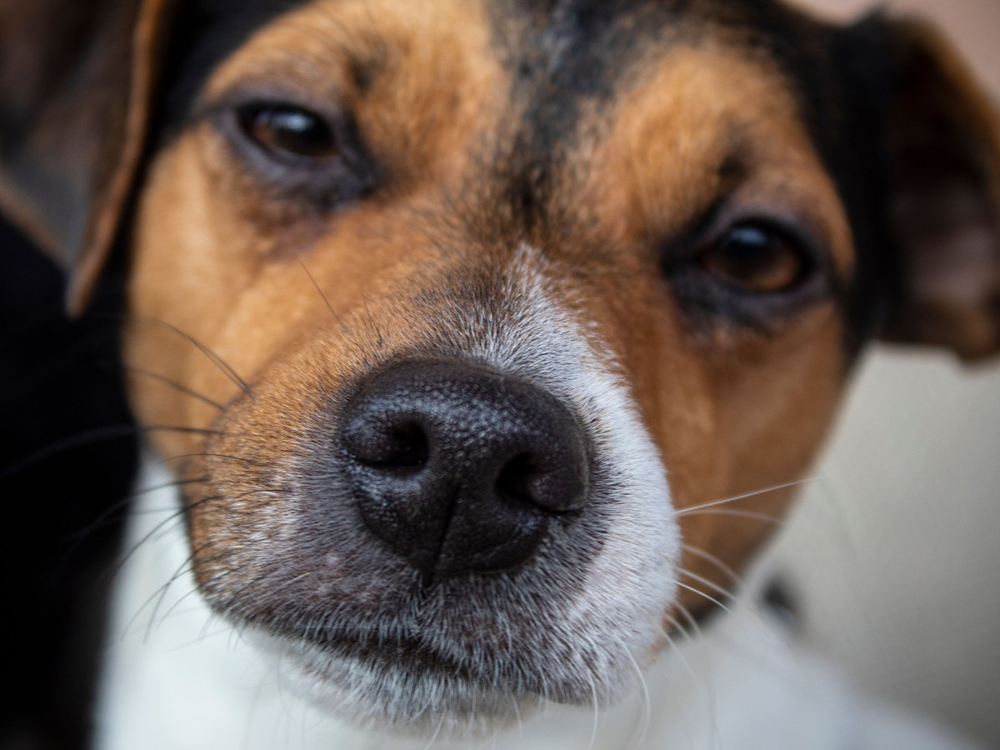
01
Consulta
«Consulta veterinaria», dice su Facebook.
-
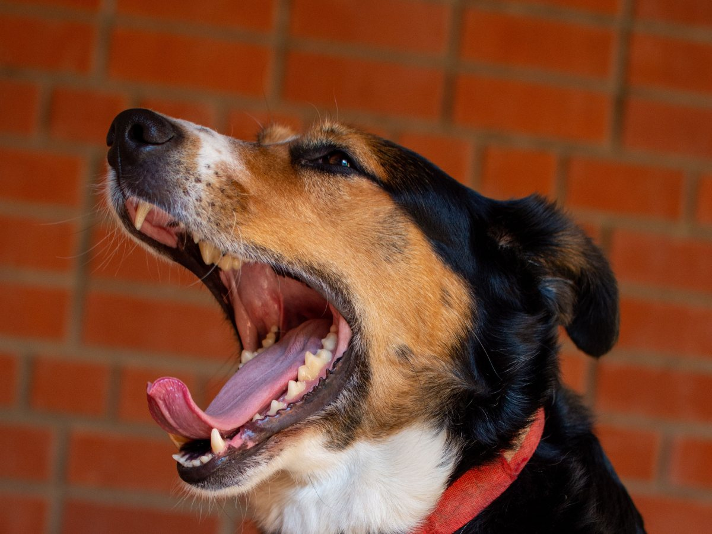
02
Revisión dental
De ejemplo.
-
03
Vacunas
De ejemplo.
-
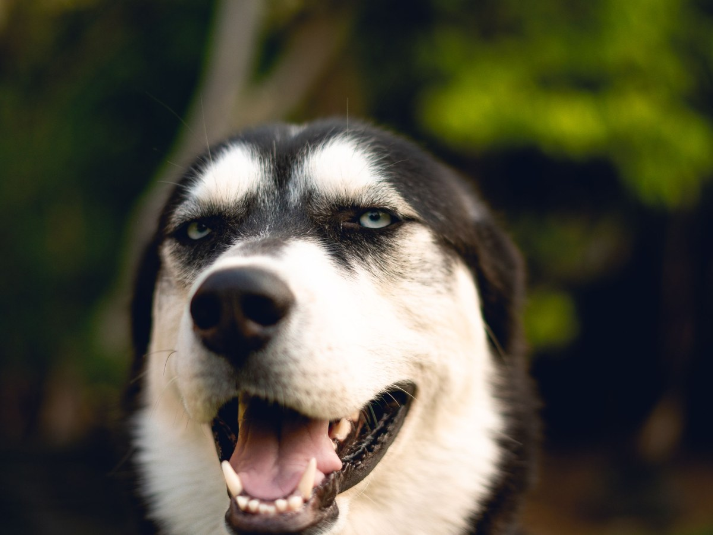
04
Perros
Los nombran tres reseñas.
-
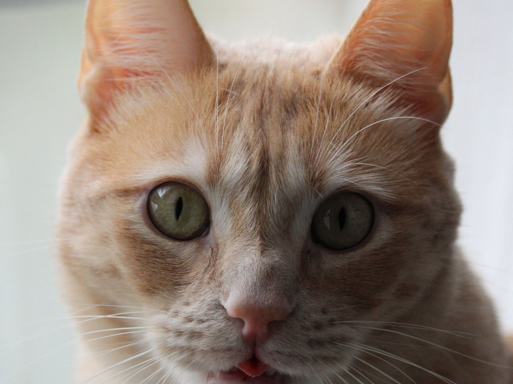
05
Gatos
De ejemplo.
-
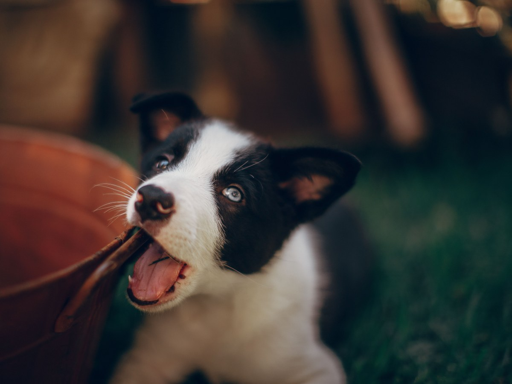
06
Cachorros
De ejemplo.
Los servicios los confirma la clínica. Sin precios: cinco reseñas hablan de ellos y la página no cita ninguno.
«Sales tranquilo y muy bien informado», dice una reseña. Esa explicación hoy sólo existe dentro de la consulta.
Reseña en Google, vista el 18-09-2026
Del rubro
Bocas sanas
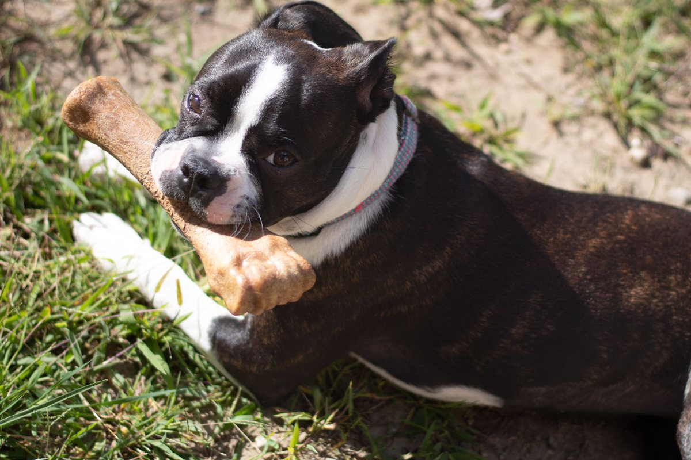
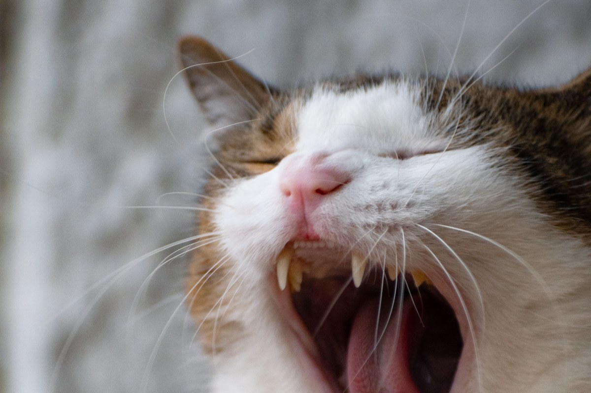
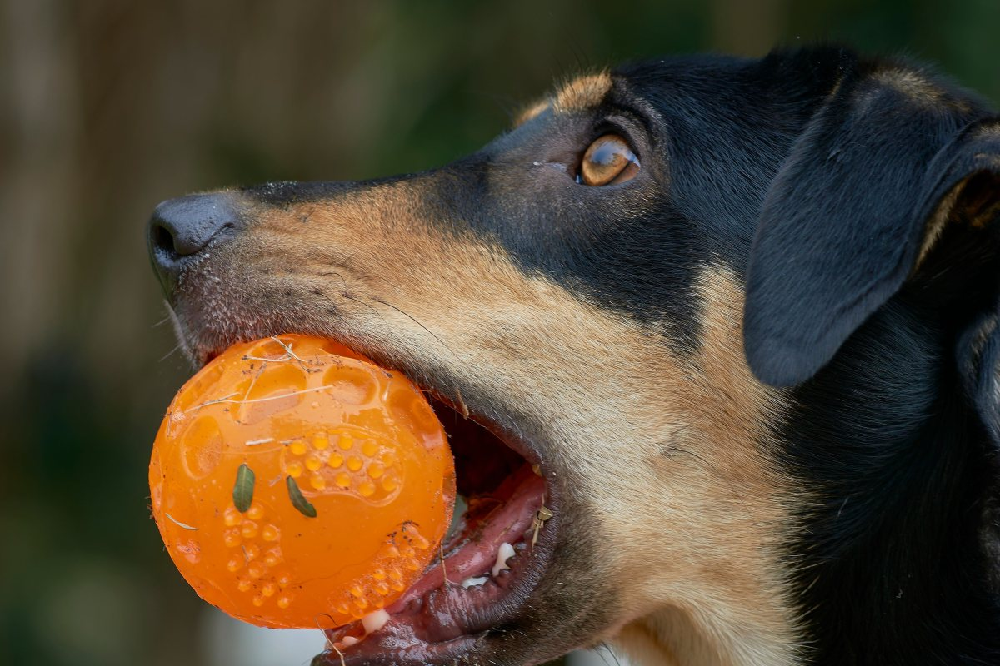
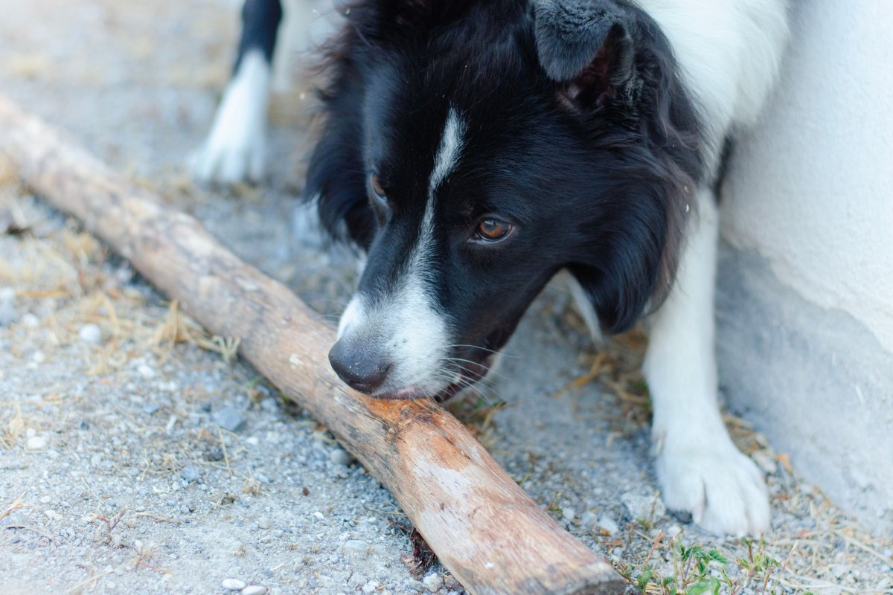
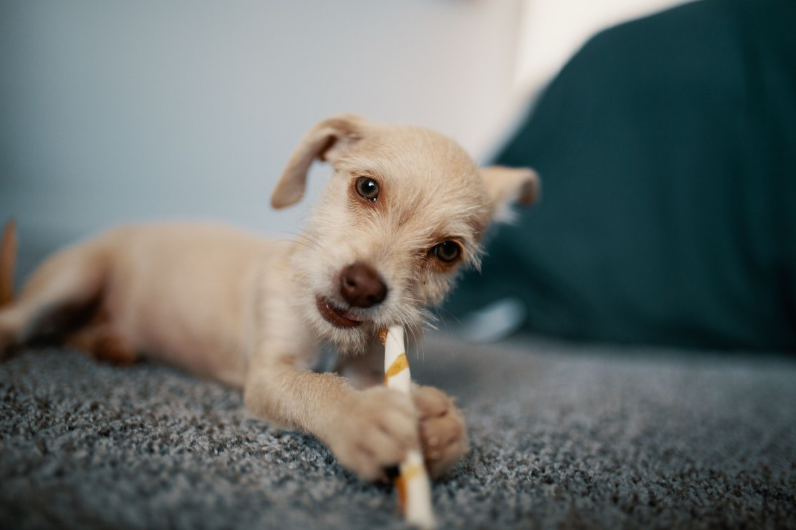
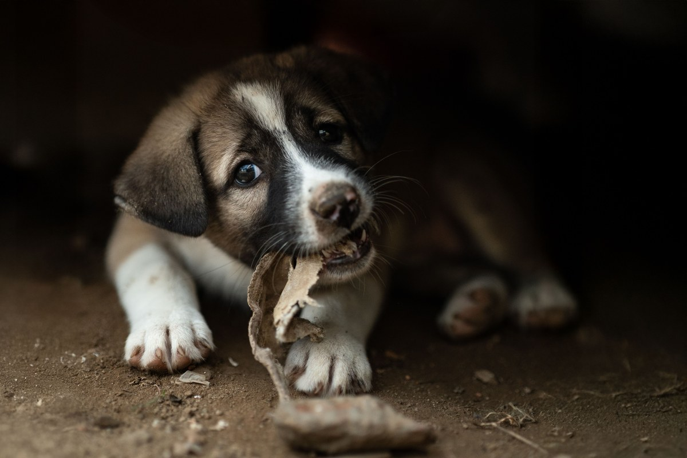
Fotos de referencia: ninguna es de la clínica.
Dónde está
En Av. Juanita
- Dirección
- Av. Juanita 0293, Puente Alto
- Teléfono
- (2) 2301 4308 (fijo)
- Horario
- Un viernes cierra a las 18:30, según Google; el resto, por confirmar
dogtorvet.cl está libre en NIC Chile.
Av. Juanita 0293 Abrir en Google Maps
Para DogtorVet
Qué es real y qué falta
Lo verificado
El 4,5 con 133 reseñas, la dirección, el teléfono fijo, el cierre a las 18:30 y que la ficha ofrece «agregar sitio web», vistos el 18-09-2026.
Lo de ejemplo
Las cuatro partes de los dientes, casi todos los servicios y las fotos. Sin medicamentos, marcas ni precios.
Lo que falta
Confirmar si hacen limpieza dental (si no, la pieza cambia), el horario completo, el equipo que nombran las reseñas, un WhatsApp para pedir hora y registrar dogtorvet.cl.